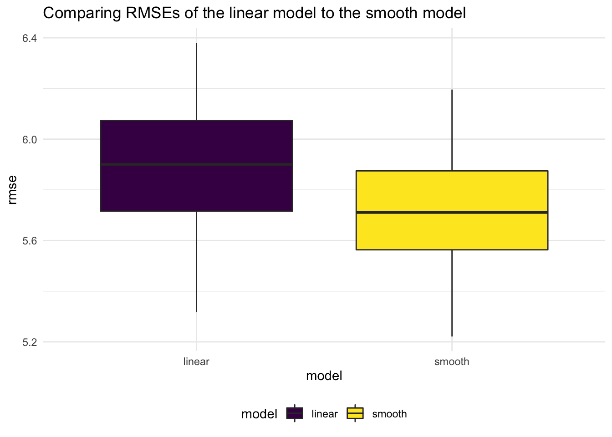
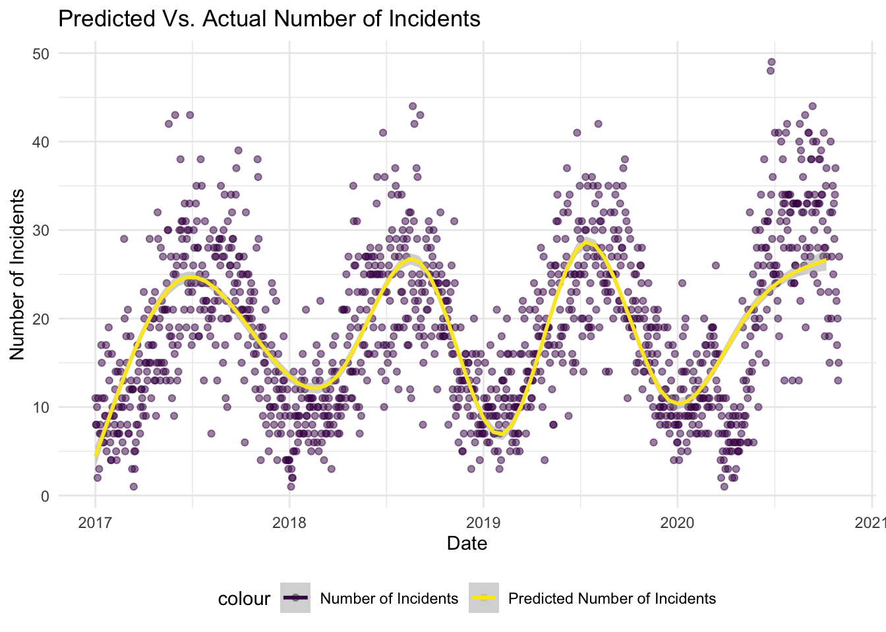

Predictive Model
Introduction
Building a model to predict the number of incidents involving both bikes and microvehicles in a given day in NYC?
From our exploratory analysis on bike and microvehicle incident trends over the last 3 years, we observed that these number of these incidents had an overall seasonal pattern … just like weather.
So, naturally, we wanted to see if we could build a model to try and predict the number of bike and microvehicle incidents in NYC. To do this, on top of the data we obtained from the New York City Motor-Vehicle-Collisions-Crashes web page, we also incorporate weather data from NOAA.
In specific, from the weather data we obtained three key variables - average daily maximum temperature, average daily minimum temperature, and average daily precipitation. The ‘average’ here refers to how we averaged these measurements from the 3 weather stations located in New York City: The one in Central Park, one by JFK Airport, and another one by La Guardia Airport.
The main quest of this page is to see if we could:
- Use Cross Validation techniques to compare different models
- Use the best model (based on Root Mean Square Errors) and predict number of incidents
- Use bootsrapping to get a more accurate value of our parameter estimates.
Methods & Results
Steps in model building:
Subset crash_dat to isolate only the vairables we need.
Here’s a sneak peak of our this subset-ed data:
| date | n_incidents | n_injured | n_killed | ny_tmin | ny_tmax | ny_prcp |
|---|---|---|---|---|---|---|
| 2017-01-01 | 11 | 9 | 0 | 3.133333 | 9.800000 | 0.00000 |
| 2017-01-02 | 8 | 7 | 0 | 2.400000 | 5.566667 | 59.33333 |
| 2017-01-03 | 8 | 5 | 0 | 4.433333 | 7.400000 | 126.00000 |
| 2017-01-04 | 10 | 6 | 0 | 1.666667 | 12.033333 | 0.00000 |
| 2017-01-05 | 2 | 2 | 0 | -2.300000 | 1.666667 | 0.00000 |
Here’s a graph showing how the number of incidents tracks remarkably well with NYC’s daily minimum and daily maximum temperature.
df %>%
ggplot(aes(x = date, y = n_incidents, color = "Number of Incidents")) +
geom_point(alpha = .5) +
geom_point(aes(x = date, y = ny_tmin, color = "Minimum Temp"), alpha = .5) +
geom_point(aes(x = date, y = ny_tmax, color = "Maximum Temp"), alpha = .5) +
labs(
title = "New York's weather pattern and Number of Incidents",
y = "Number of Incidents",
x = "Time"
)Create a cross validation dataset that splits the data: 80% for training and 20% for testing
cv_df =
crossv_mc(df, 100)
cv_df = cv_df %>%
mutate(
train = map(train, as_tibble),
test = map(test, as_tibble)
) Fit different models on the train dataset and compute RMSE values of the corresponding models
cv_df = cv_df %>%
mutate(
linear_mod = map(.x = train, ~lm(n_incidents ~ ny_prcp + ny_tmin + ny_tmax, data = .x)),
smooth_mod = map(.x = train, ~gam(n_incidents ~ s(ny_tmax) + s(ny_tmin) + s(ny_prcp), data = .x))
) %>%
mutate(
rmse_linear = map2_dbl(.x = linear_mod, .y = test, ~rmse(model = .x, data =.y)),
rmse_smooth = map2_dbl(.x = smooth_mod, .y = test, ~rmse(model = .x, data =.y))
)Plot RMSE’s to compare the different models
cv_df %>%
select(starts_with("rmse")) %>%
pivot_longer(
everything(),
names_to = "model",
values_to = "rmse",
names_prefix = "rmse_"
) %>%
ggplot(aes(x = model, y =rmse, fill = model)) +
geom_boxplot() +
labs(
title = "Comparing RMSEs of the linear model to the smooth model"
)
We note that the Smooth model has a lower RMSE, so we will build a model based off that.
Fitting a smooth model using daily average maximum temperature and average daily precipitation to predict number of incidents
smooth = gam(n_incidents ~ s(ny_tmax) + + s(ny_tmin) + s(ny_prcp), data = df) Making a prediction plot using the smooth model outputs
df %>%
add_predictions(smooth) %>%
ggplot(aes(x = date, y = n_incidents, color = "Number of Incidents")) +
geom_point(alpha = .5) +
geom_smooth(aes(y = pred, color = "Predicted Number of Incidents")) +
labs(
title = "Predicted Vs. Actual Number of Incidents",
x = "Date",
y = "Number of Incidents"
)
We see that the smooth line tracks really well the observed number of predictions. Note however, this is not the most thorough model for a couple of reasons discussed in the summary section of this page.
Bootstrapping to obtain non-parametric estimates of out model
We first assessing the relationship between Number of Incidents and our predictor variables
p1 = df %>%
ggplot(aes(x = ny_tmax, y = n_incidents)) +
geom_point() +
labs(
y = "Number of Incidents",
x = "Daily Maximum Temperature"
)
p2 = df %>%
ggplot(aes(x = ny_tmin, y = n_incidents)) +
geom_point() +
labs(
y = "Number of Incidents",
x = "Daily Minimum Temperature"
)
p3 = df %>%
ggplot(aes(x = ny_prcp, y = n_incidents)) +
geom_point() +
labs(
y = "Number of Incidents",
x = "Daily Precipitation"
)
p1 / p2 / p3
In the next section, we apply Bootsrapping (1000 resamples) to obtain estimates without making parameteric assumptions
Bootstrapping using modelr
df_boot_results = df %>%
bootstrap(1000, id = "strap_number") %>%
mutate(
strap = map(strap, as_tibble),
models = map(.x = strap, ~gam(n_incidents ~ s(ny_tmax) + s(ny_tmin) + s(ny_prcp), data = .x)),
results = map(models, broom::tidy)
) %>%
select(strap_number, results) %>%
unnest(results) Computing mean parameter estimates and constructing confidence intervals based on bootstrap confidence intervals
smooth_model = df_boot_results %>%
group_by(term) %>%
summarize(
mean_est = mean(edf),
sd_est = sd(edf),
ci_lower = quantile(edf, 0.025),
ci_upper = quantile(edf, 0.975)
)
smooth_model %>% knitr::kable()| term | mean_est | sd_est | ci_lower | ci_upper |
|---|---|---|---|---|
| s(ny_prcp) | 5.161344 | 1.591514 | 2.773001 | 8.314164 |
| s(ny_tmax) | 5.068845 | 2.113530 | 1.000000 | 8.473610 |
| s(ny_tmin) | 4.949790 | 1.147207 | 2.972163 | 7.571552 |
Model Equation:
\[Where:\] \[tmax= average\:daily\:max\:temp\:in\:NYC\] \[tmin= average\:daily\:min\:temp\:in\:NYC\] \[prcp= average\:daily\:precipiation\:in\:NYC\] Lastly, we show here that under repeated sampling, using bootstrap, we see that the distribution of our estimate is skewed
df_boot_results %>%
filter(term == "s(ny_prcp)") %>%
ggplot(aes(x = edf)) +
geom_density()Summary
In this section we follow up on one of our earlier observations on how incidents involving microvehicles and bikes (overall) displayed seasonality (like the weather.) We subsequently try to build a predictive model, using these (weather related) predictor: daily maximum temperature, daily minimum temperature, and precipitation.
To that end, we first use cross validation to compare a linear model and a smooth model. Using RMSE as a discriminator, we decide to use the smooth model to build our predictive equation. Lastly, we use bootsrapping to obtain non-parametric estimates and confidence intervals of the final model equation.
N.B:
Some (but not all) of the reasons that our model is not the best possible predictive model:
- Our outcome variable,
number_of_incidents, is a count variable that we’re treating as continuous. - A smooth model tends to over fit the model
- We use both daily maximum temperature and daily minimum temperatures, and we don’t address the potential issues of collinearity.
We would appreciate any feedback you may have on this and other sections.